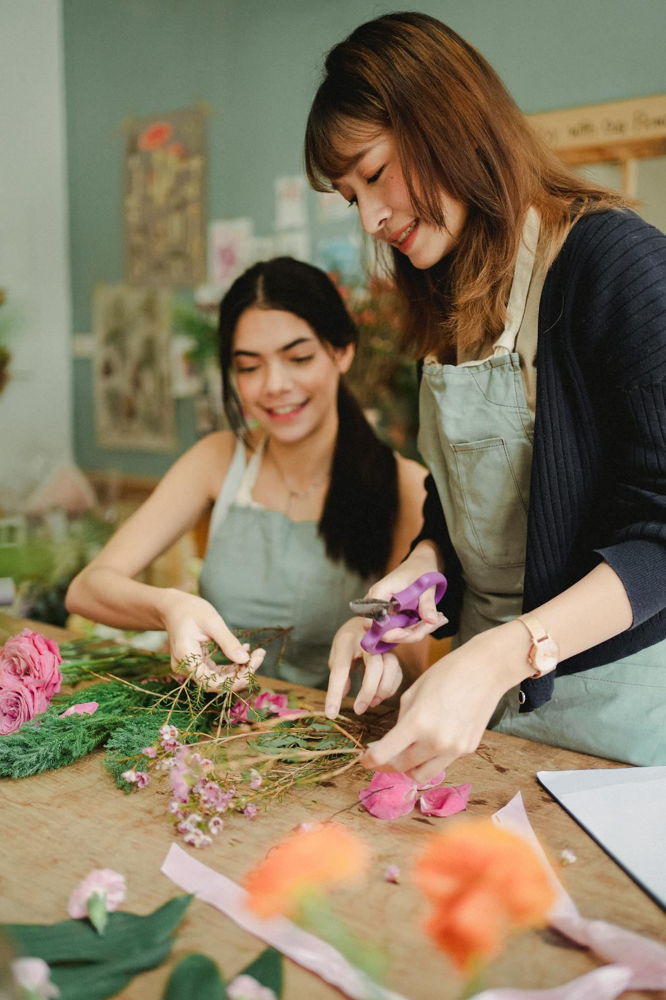

What we offer
Weddings
Transform your special day with bespoke floral designs tailored to your unique love story. From breathtaking bridal bouquets and delicate boutonnieres to grand ceremony arches and elegant reception centerpieces, we curate every detail to complement your theme and create an enchanting, unforgettable atmosphere for you and your guests.
Special Ocassions
Mark life's most meaningful milestones with custom-designed floral arrangements that speak from the heart. Whether you are celebrating a milestone birthday, a romantic anniversary, a graduation, or a warm housewarming, our vibrant blooms add elegance and joy to the moments that matter most to you and your loved ones.
Corporate Events
Elevate your brand presence and impress your clients with sophisticated floral styling. We design premium installations for product launches, gala dinners, annual conferences, and high-profile boardrooms. Our arrangements are carefully crafted to reflect your company's aesthetic, adding a polished and welcoming touch to any business venue.
What's the process
1. Initial Inquiry & Booking
Client reaches out via website contact form, email, or a phone call to provide basic event details including date, venue, guest count, and general style inspiration. Calendar availability is verified, and an initial consultation is scheduled.
2. Creative Consultation
A 30-minute phone call, video chat, or in-person meeting to discuss color palettes, favorite flower varieties, venue layouts, and budget expectations. Visual mood boards and a detailed, itemized pricing proposal are sent to the client for review.
3. Proposal Review & Securing the Date
Client reviews the floral proposal, requests any necessary adjustments, and signs the service agreement. A non-refundable retainer fee is processed and paid, officially locking in the event date on the florist's calendar.
4. Final Detail Review
A final check-in meeting happens 4 to 6 weeks before the event to lock in final table counts, update bouquet quantities, and confirm strict venue setup time restrictions. The floral order is finalized and sent to trusted growers for sourcing.
5. Sourcing & Creation
Fresh blooms arrive at the studio 2 to 4 days prior to the event to be safely hydrated, trimmed, and conditioned. Floral designers build the centerpieces and bouquets by hand before packing them into climate-controlled vehicles for transit.
6. On-Site Delivery & Setup
The floral team arrives at the venue on the exact morning of the event to pin boutonnieres, hand-deliver bridal bouquets, and build complex installations on-site. The space is completely transformed and ready before the first guest arrives.
7. Post-Event Teardown
The team returns to the venue to execute a strike immediately following the conclusion of the event. Large structures are safely dismantled, rental vases are retrieved, and individual wrapped bouquets are left for clients to take home.

Need a florist for your next event?
Contact us